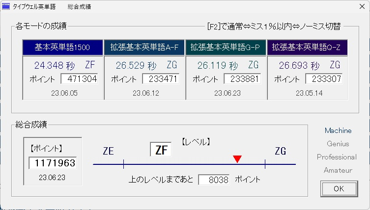
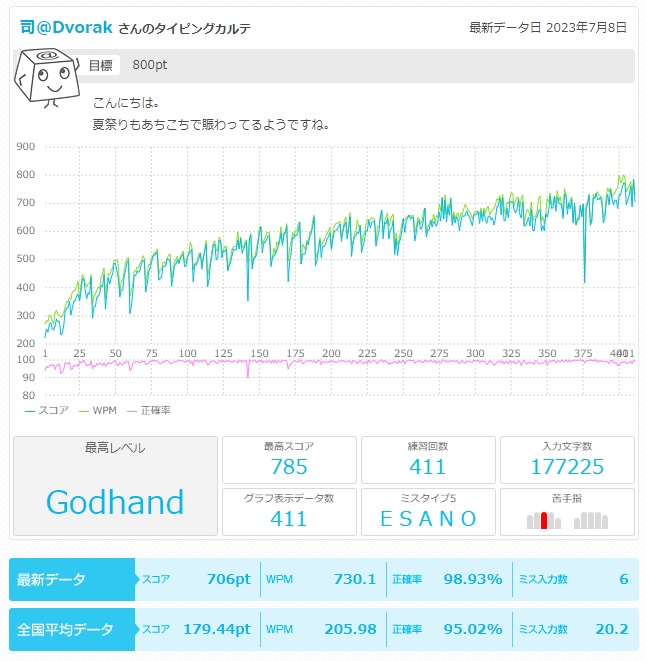
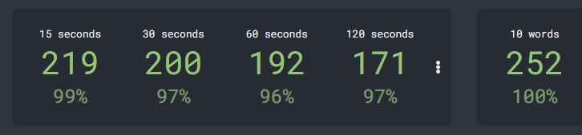

From the New World
競技タイピングの記録置き場
旧ブログ（タイピング記事など）→A fan of the Dvorak layout
タイピング記録一覧（項目クリックで開きます）
- タイプウェル英単語

・2023/06/23 G-P更新 26.650(ZG) -> 26.119(ZG)
・2023/06/15 G-P更新 26.855(ZG) -> 26.650(ZG)
・2023/06/12 A-F更新 26.923(ZG) -> 26.529(ZG)
・2023/06/05 総合ZF達成
・2023/06/05 基本英単語更新 25.166(ZF) -> 24.348(ZF)
・2023/05/30 基本英単語更新 25.253(ZF) -> 25.166(ZF)
・2023/05/15 基本英単語更新 25.362(ZF) -> 25.253(ZF)
・2023/05/15 Q-Z更新 27.100(ZG) -> 26.693(ZG)
・2023/05/12 Q-Z更新 27.359(ZG) -> 27.100(ZG)
- タイプウェル憲法E
・2023/07/10 更新分反映（1151934pt, ZH）
- e-typing
※e-typing英語の記録です

・2023/06/27 772pt -> 785pt
・2023/06/15 754pt -> 772pt
・2023/06/13 750pt -> 754pt
- typeracer
・2023/06/18 best race更新 209.91wpm -> 226.42wpm
・2023/06/10 best race更新 203.68wpm -> 209.91wpm
・2023/06/01 best race更新 201.50wpm -> 203.68wpm
・2023/05/21 best race更新 195.75wpm -> 201.50wpm
- monkeytype

・2023/07/05 60s更新 191wpm -> 192wpm
・2023/06/23 15s更新 216wpm -> 219wpm
・2023/06/06 15s更新 214wpm -> 216wpm
・2023/06/01 60s更新 187wpm -> 191wpm
・2023/05/22 10words更新 244wpm -> 251wpm
・2023/05/16 15s更新 208wpm -> 214wpm
- 10fastfingers（追加予定）
- Intersteno（本番記録、練習記録）（追加予定）
タイピング関連記事
・Dvorak配列で出来る最適化の一覧 …… 2023/06/09
・typeracerで任意のテキストを打つ方法 …… 2023/05/29
・monkeytypeを攻略する …… 2023/05/18